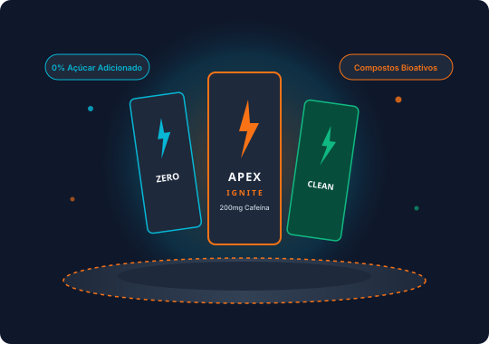

Linha Zero Açúcar
Máxima intensidade sem calorias vazias. Formulada para fornecer estado de alerta constante sem provocar quedas bruscas de glicemia ou fadiga reativa.
O portal definitivo para entusiastas de esportes, estudantes e profissionais que buscam energia de verdade, com transparência nutricional, teores exatos de cafeína e consumo responsável.

Do atleta em busca de explosão física ao estudante focado em longas horas de estudo, conheça as linhas especialmente selecionadas para cada objetivo.
Máxima intensidade sem calorias vazias. Formulada para fornecer estado de alerta constante sem provocar quedas bruscas de glicemia ou fadiga reativa.
Cafeína botânica pura extraída de café verde, chá verde e erva-mate orgânica. Livre de corantes, conservantes sintéticos e adoçantes artificiais.
Nootrópicos ativos, citicolina e L-teanina combinados com cafeína para alta agilidade cognitiva, concentração prolongada e tempo de reação afiado.
Doses elevadas de cafeína anidra (até 200 mg), beta-alanina, eletrólitos essenciais e taurina para resistência muscular em treinos de alta octanagem.
Entenda a ciência por trás dos principais compostos bioativos presentes nas bebidas energéticas modernas.
Auxilia na contração muscular, atua como regulador osmótico celular e protege o sistema cardiovascular, modulando a resposta do corpo à cafeína.
Bloqueia os receptores de adenosina no cérebro, retardando a sensação de cansaço, aguçando o foco mental e aumentando a taxa metabólica basal.
Coenzimas vitais na conversão dos alimentos ingeridos em ATP (energia celular), prevenindo a sensação de exaustão física e mental.
Rico em polifenóis protetores e L-teanina, promovendo liberação energética suave e sustentada sem causar nervosismo ou tremores.